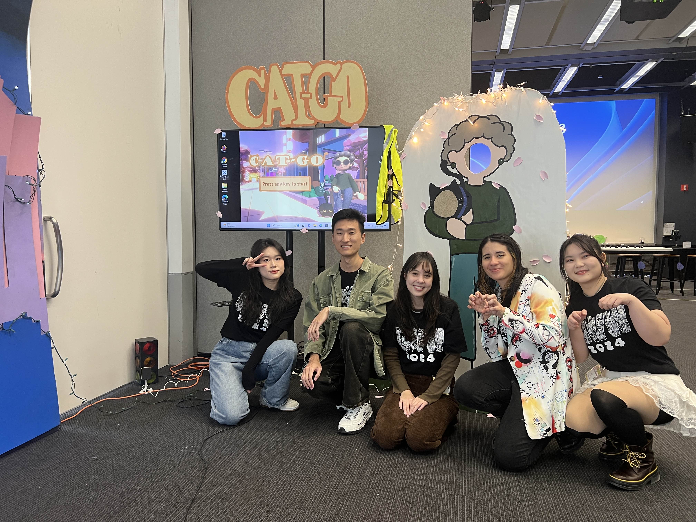

"Cat-Go" is a multiplayer game in which one person who cannot see is led by their guide cat to reach the end of a busy street! One player walks on a DDR pad blindfolded, while the other player is attached via leash & belt as the guide cat. Using only their body movement and a button to meow, the guide cat must inform their partner when and which direction to step, avoiding obstacles and gaining fish treats along the way to the pet store goal.
Researched and designed the game aesthetic and color palette to create a pleasant lofi vibe.
Crafted 3D asset buildings in Blender to add to the game environment.
Used Unity3D particle systems to create a special effect of sakura petals falling.
Positioned all the game environment lights, making sure to represent a city night.
Designed and painted a 6-foot cardboard painting of the buildings, following the game's color palette for the game's kiosk at our program's annual game festival.
